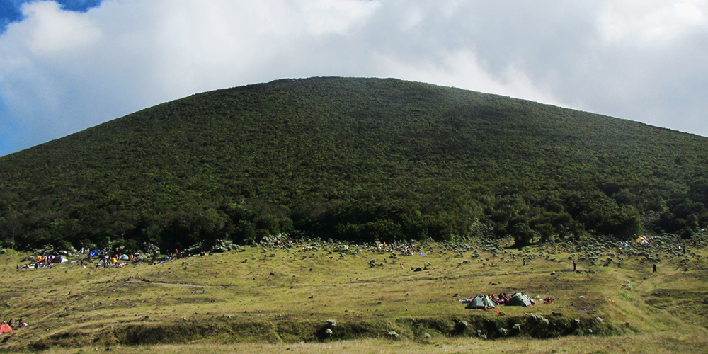

Gunung Gede Pangrango
Kabupaten Cianjur, Jawa Barat | 2,958 MDPL
Mentari memancarkan sinarnya dari peraduan seraya para petani mulai memanggul cangkul menuju perkebunan. Saat ingin menapaki puncaknya, awal bulan Juni, via jalur Gunung Putri, kaki Gunung Gede menawarkan pemandangan alam yang luar biasa indah. Tak salah jika di bulan ini banyak pendaki yang ingin menghabiskan akhir pekannya dengan berpetualang menjamahi Gunung Gede-Pangrango.

Gunung Gede-Pangrango merupakan salah satu dari lima taman nasional tertua yang dimiliki Indonesia. Diresmikan sejak 1980 berdasarkan SK Menteri Pertanian, Taman Nasional Gunung Gede Pangrango (TNGP)
memiliki luas lahan lebih dari 22.000 hektare. Secara umum, TNGP ditutupi oleh hutan hujan tropis yang selalu basah. Bahkan di musim kemarau, vegetasi hutannya mampu menjaga kelembaban untuk tetap basah.
Mendaki Gunung Gede-Pangrango merupakan salah satu cara menikmati kekayaan hutan hujan tropis Indonesia. Terdapat dua alternatif pilihan jalur untuk sampai ke puncak Gunung Gede, yaitu via Gunung Putri dan via Cibodas. Jika melalui jalur Gunung Putri, banyak pendaki yang memilih untuk bermalam terlebih dahulu di alun-alun Surya Kencana sebelum kemudian kembali mendaki menuju puncak.
Puncak Gunung Gede berada di ketinggian sekitar 2.900 meter di atas permukaan laut (mdpl). Pada 1.000 meter pertama, pendaki akan merasakan suhu udara yang tidak terlalu dingin. Di kawasan ini, jalur pendakian didominasi pohon-pohon besar, seperti pohon rasamala. Di bagian medio sebelum mencapai puncak, pepohonan besar semakin sedikit. Di kawasan ini, pohon-pohon yang tumbuh terlihat berbeda dibandingkan di ketinggian sebelumnya. Pohon pada ketinggian 2.000 mdpl memiliki batang yang panjang hingga mencapai 20 meter, ukuran daun lebih kecil, tapi memiliki akar yang sangat besar dan kuat. Sementara di ketinggian hampir 3.000 mdpl, Gunung Gede dihiasi vegetasi tumbuhan dengan ukuran yang lebih kecil dan daun berwarna cerah, seperti edelweis dan cantigi yang banyak terlihat di sepanjang alun-alun Surya Kencana.
Alun-alun Surya Kencana merupakan kawasan yang paling digemari para pendaki untuk membuka tenda dan bermalam. Hal tersebut bukan tanpa sebab. Selain memiliki pemandangan indah lantaran terdapat padang edelweis dan diapit oleh dua gunung, di tempat ini juga mengalir sumber air yang sangat diperlukan oleh para pendaki.
Waktu yang ditempuh dari alun-alun Surya Kencana untuk sampai ke puncak sekitar 30 menit. Di sepanjang jalur, akan ditemukan banyak pohon cantigi daunnya berwarna merah terang. Cantigi yang bernama latin Vaccinium varingiaefolium merupakan tumbuhan yang mampu bertahan pada lahan yang kekurangan nutrisi atau dalam keadaan cuaca yang sangat ekstrim.
Sesampainya di puncak Gunung Gede, pendaki akan disambut lukisan alam yang luar biasa indah. Rasa lelah akan terbayar lunas ketika melihat indahnya lingkaran kawah dengan semburan uap belerang yang masih aktif. Dari puncak Gunung Gede, akan terlihat angkuhnya Gunung Pangrango di seberang. Tetapi jika cuaca sedang tidak bersahabat, Gunung Pangrango tidak bisa terlihat karena tertutup kabut.
Perjalanan kemudian dilanjutkan untuk sampai pos terakhir di Cibodas. Untuk sampai ke pos terakhir, diperlukan waktu sekitar 7 jam perjalanan bagi pendaki pemula, mungkin akan lebih cepat bagi pendaki yang sudah terbiasa dengan jalur menurun. Sama halnya saat mendaki, pemandangan perjalanan turun juga masih didominasi vegetasi hutan hujan tropis.
Selain kaya akan berbagai flora, TNGP juga kaya akan berbagai fauna. Jika beruntung, pandaki akan melihat sekawanan owa Jawa, kijang, serta aneka burung, seperti burung elang dan burung hantu. Hutan TNGP juga merupakan habitat asli bagi kawanan monyet dan bermacam serangga yang bahkan mungkin belum dinamakan secara ilmiah.
Sebelum mencapai pertigaan antara jalur menuju Gunung Pangrango dan Cibodas, pendaki akan menemukan sebuah curug di tengah hutan dengan air yang sangat jernih. Konon, curug yang tidak bernama ini merupakan tempat favorit Soe Hok Gie untuk beristirahat sejenak sambil membasuh muka sebelum melanjutkan perjalanan. Dilihat dari posisinya yang berada di ketinggian lebih dari 1.000 mdpl, curug tersebut bisa dibilang sebagai curug tertinggi di Jawa Barat.
Setelah curug, para pendaki akan melewati sumber air panas yang mengandung belerang. Perlu ekstra hati-hati untuk melewati jalur tersebut. Selain dipenuhi bebatuan licin, di samping jalur juga terdapat jurang yang curam. Karena itulah, banyak pendaki yang mengejar waktu agar bisa melewati jalur ini sebelum hari mulai gelap.
Terdapat tiga poin sebelum tiba di pos terakhir, yaitu Kandang Badak, Kandang Batu, dan Air Terjun Cibeureum. Kandang Badak dan Kandang Batu merupakan poin yang paling ramai dikunjungi pendaki. Di tempat ini, biasanya para pendaki istirahat atau makan dan minum sambil saling bercengkerama sebelum melanjutkan perjalanan kembali menuju pos terakhir di Cibodas.
Menapaki Gunung Gede di TNGP merupakan kegiatan yang menyenangkan untuk mengisi waktu liburan. Selain bisa menyaksikan kekayaan alam hutan hujan tropis Indonesia, aktivitas wisata alam diyakini mampu melatih seseorang untuk berjiwa mandiri, pemberani, serta cinta tanah air dan budayanya. Namun begitu, diperlukan persiapan fisik dan mental secara khusus agar tetap fit dan selalu menjaga kelestarian hutan dengan tidak membuang sampah sembarangan.